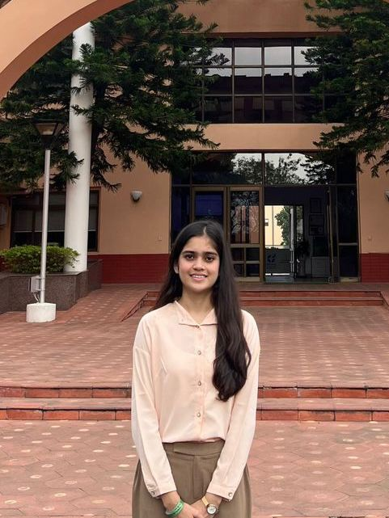
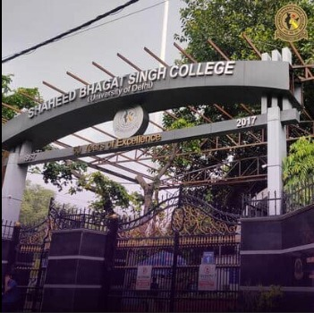
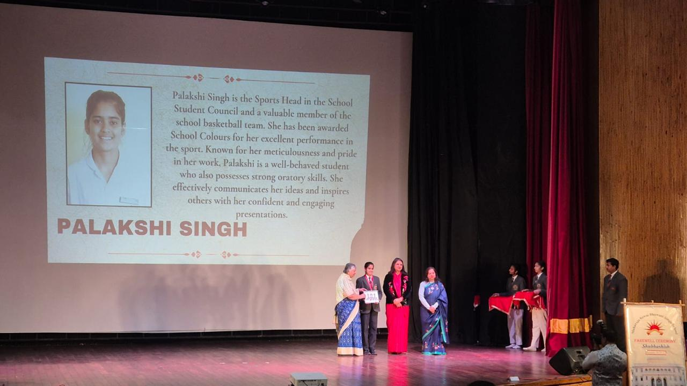
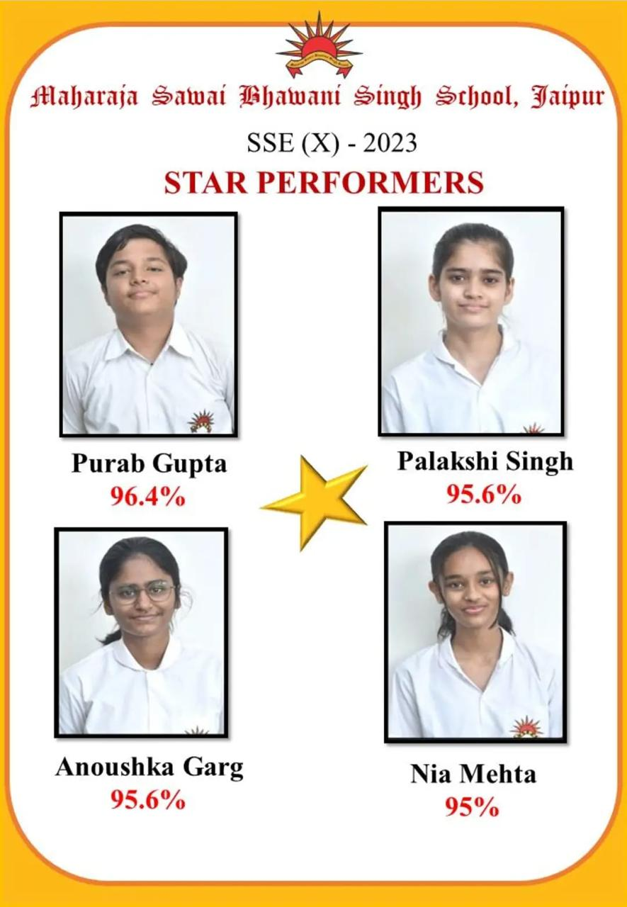

About
I don’t just "do" things; I immerse myself in them. Currently, I am navigating the intense but rewarding world of dual degrees, balancing a rigorous commerce curriculum at Delhi University with a data-driven business program at IIM Bangalore. My ambition isn't just to earn degrees, but to build a multifaceted career where business strategy meets digital storytelling.
When I’m not deep-diving into financial models or consulting frameworks, you’ll find me exploring my "side quests" from professional content creation and internships to volunteering for environmental causes. I am fueled by a restless passion to create, lead, and constantly evolve. I believe that being 'professional' doesn't mean being robotic; it means bringing your authentic, high-energy self to everything you build.
Education
BBA - Digital Business & Entrepreneurship
IIM Bangalore | 2025 - 2028
Engaged in a cutting-edge program focused on the intersection of digital transformation, data analytics, and entrepreneurial leadership. This degree allows me to apply high-level business frameworks to real-world digital problems.

Bachelors of Commerce (Honours)
Shaheed Bhagat Singh College, Delhi University | 2025 - 2028
Developing a deep foundation in finance and trade. Currently serving as a Trainee Consultant at 180 Degrees Consulting, where I work on providing social impact consulting to non-profits and social enterprises.

Senior Secondary Education
Maharaja Sawai Bhawani Singh School | 2024 - 2025
Graduated with 93.8% (Commerce + Math). During this phase, I balanced high academic rigor with my role as Sports Head, learning the art of discipline and time management.

Secondary Education
Maharaja Sawai Bhawani Singh School | 2022 - 2023
Achieved a 95.6% score, emerging as the School Topper. My academic journey here was marked by a 98% in Social Science, reflecting my early interest in understanding societal and economic structures.
